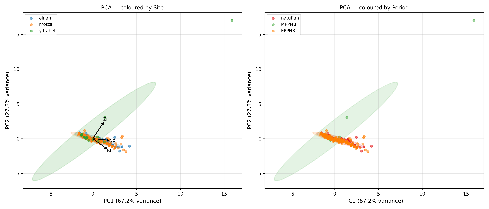
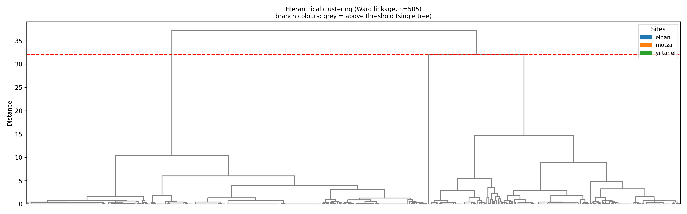
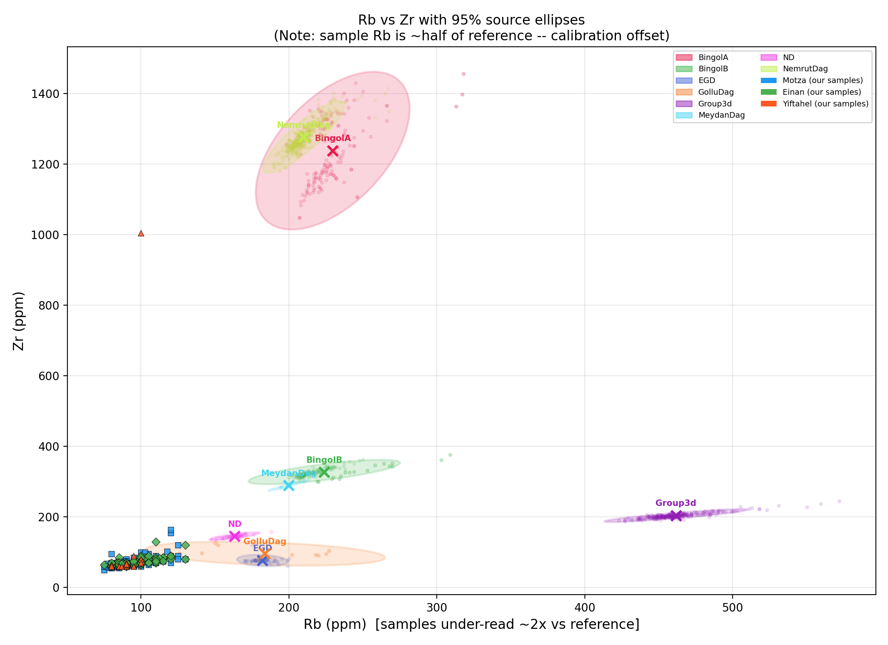
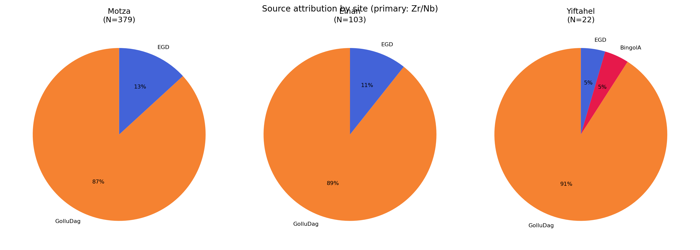

March 28, 2026
We report portable X-ray fluorescence (pXRF) sourcing analysis of 504 obsidian artifacts from three South Levantine Neolithic sites: Motza (Early Pre-Pottery Neolithic B, EPPNB; N=379), Einan/Ain Mallaha (Natufian; N=103), and Yiftahel (Middle Pre-Pottery Neolithic B, MPPNB; N=22). Measurements were made on a Niton XL3t instrument in Mining Cu/Zn mode. Source attribution was performed by Mahalanobis distance in Zr–Nb space against a compiled reference database of nine Tier-1 (pXRF/EDXRF) Anatolian and Near Eastern obsidian sources. Results show strong dominance of the Göllü Dağ East (Cappadocia) source complex at all three sites, with a minor EGD component. A single artifact from Yiftahel (basket 10671) is confidently attributed to Bingöl A (eastern Anatolia), representing a notable long-distance procurement. 84 obsidian artifacts display anomalously high calcium values consistent with carbonate burial contamination, though their volcanic fingerprint elements (Zr, Nb) remain unaffected. Five items are identified as non-obsidian (flint/chert) and excluded from all attribution analyses.
Obsidian — volcanic glass formed from rapidly cooled silica-rich magma — was among the most widely exchanged raw materials in the Neolithic Near East. Its fracture properties make it ideal for knapping sharp-edged tools, and its geochemical uniqueness (each volcanic source has a distinct chemical fingerprint) makes it one of the few materials for which provenance can be determined with high confidence using non-destructive techniques (Cann & Renfrew 1964; Renfrew et al. 1966).
Portable X-ray fluorescence (pXRF) spectrometry has become the dominant method for obsidian sourcing in field contexts because it is rapid, non-destructive, and requires no sample preparation. The instrument irradiates the artifact surface with X-rays, causing each element in the glass to emit characteristic fluorescence; the concentrations of elements such as Zr, Nb, Rb, Y, and Sr can be measured in seconds to minutes (Shackley 2010; Frahm 2014).
The three sites examined here span the Levantine sequence from the Natufian (~15,000–11,500 BP) through the MPPNB (~10,200–9,000 BP):
The principal goals of this study are: (1) to determine the obsidian source or sources exploited at each site; (2) to assess whether sourcing patterns change across the Natufian–PPNB transition; and (3) to document any anomalous or unexpected attributions that may indicate unusual procurement routes or material identifications.
A total of 510 items were submitted for pXRF analysis. Of these, 3 were explicitly labelled as flint in the field records, and two additional items were determined post-hoc to be non-obsidian on geochemical grounds (see Section 7.6). After exclusions, 504 items entered the attribution analysis.
Measurements were performed on a Niton XL3t pXRF spectrometer (Thermo Fisher Scientific) in Mining Cu/Zn mode with a 60-second count time per reading. Each artifact was measured twice — once on the dorsal face and once on the ventral face where possible — and mean values were used for attribution. Where only a single reading was available (e.g., heavily retouched pieces), that reading was used directly.
Quality flags were assigned to each averaged measurement:
Elements measured in Mining Cu/Zn mode include: Rb, Sr, Zr, Nb, Fe, Mn, Zn, Ti, Ba, Th, Pb, Ga, Si, K, and Ca. Note that Y is not measured in this mode (unlike Geo mode), and Sr is frequently below the limit of detection (LOD) for obsidian in this mode. The primary attribution elements are therefore Zr and Nb.
The reference database was compiled from published pXRF and EDXRF datasets (Tier 1) for Anatolian and Near Eastern obsidian sources relevant to the South Levant. Sources were selected based on geographic plausibility (Cappadocian and eastern Anatolian sources are the known suppliers for Levantine Neolithic sites) and data availability for the Zr–Nb element pair.
Method tiers used in this study:
Only Tier 1 data were used for Mahalanobis distance attribution. Nine Levant-relevant sources met the minimum threshold (N ≥ 5 complete Zr/Nb pairs) for computing a covariance matrix:
Table 1: Reference database summary (Tier 1 sources, Levant-relevant).
| Source | N | Rb (ppm) | Zr (ppm) | Nb (ppm) | References |
|---|---|---|---|---|---|
| BingolA | 152 | 229.6 ±21.3 | 1238.5 ±91.4 | 61.0 ±6.3 | Campbell & Healey 2016; Schechter et al. 2016 |
| BingolB | 157 | 223.9 ±21.0 | 327.4 ±14.2 | 18.0 ±2.0 | Campbell & Healey 2016; Schechter et al. 2016 |
| EGD | 63 | 182.1 ±7.0 | 76.6 ±6.6 | 24.6 ±1.1 | Binder et al. 2011; Carter et al. 2006 |
| GolluDag | 26 | 183.8 ±33.2 | 96.0 ±14.0 | 23.8 ±4.8 | Milic 2014; Morgan 2015; Schechter et al. 2016 |
| Group3d | 279 | 461.6 ±19.8 | 204.0 ±7.5 | 28.6 ±1.8 | Campbell & Healey 2016 |
| MeydanDag | 6 | 199.8 ±5.7 | 289.4 ±6.3 | 30.2 ±2.7 | Campbell & Healey 2016 |
| Mus | 3 | 180.1 ±1.4 | 247.2 ±12.2 | 62.2 ±3.5 | Campbell & Healey 2016 |
| ND | 46 | 163.2 ±7.0 | 145.5 ±4.5 | 20.8 ±0.8 | Carter et al. 2006; Milic 2014 |
| NemrutDag | 340 | 210.0 ±11.2 | 1276.8 ±41.6 | 64.8 ±3.1 | Campbell & Healey 2016 |
Note: Rb values for our samples are under-read by approximately 2× relative to the reference database values listed here (see Section 4.2).
Each artifact’s two readings were averaged element by element. If both readings for a given element were below the instrument’s limit of detection (LOD), the element was assigned NaN for that artifact. If one reading was above LOD and one below, the above-LOD value was used.
Items meeting any of the following criteria were reviewed individually before attribution:
A systematic discrepancy was observed between our pXRF Rb readings and published reference values for the same sources. For Göllü Dağ East (EGD), the published Tier 1 reference mean is Rb ≈ 182 ppm, while our instrument reads the same source signature at approximately Rb ≈ 91 ppm — a factor of roughly 2×.
This offset is consistent with known differences between the Niton Mining Cu/Zn mode and the Geo mode (or laboratory XRF) for Rb in silica-rich matrices. The Mining mode is optimised for ore minerals and applies a different calibration curve to Rb than the Geo mode.
Consequences for this study:
Rb_corrected = Rb_measured × 2) to
bring it into approximate agreement with the reference database before
computing 3-element Mahalanobis distances.Recommendation for future work: measure a set of artifacts with known provenance (or certified obsidian standards) on the same instrument in both Mining and Geo modes, or against laboratory XRF, to derive a more rigorous instrument-specific calibration factor for Rb.
A biplot plots two geochemical elements against each other for both the reference sources (shown as confidence ellipses) and the unknown samples (shown as coloured points). Each source occupies a distinct region of Zr–Nb space, and the 95% Mahalanobis confidence ellipses define the area within which 95% of geochemically authentic members of that source would be expected to fall.
The ellipse size and orientation reflect the spread and correlation structure of the reference data: sources with many precisely measured reference specimens have small, tight ellipses, while sources with fewer or more variable specimens have larger ellipses.
For each artifact, we compute the Mahalanobis distance to every reference source. The Mahalanobis distance is a generalisation of the ordinary Euclidean distance that accounts for the fact that the measurement space is not uniform — elements have different variances and are correlated with each other.
Intuitively: if source A has typical values of Zr = 80 ± 5 ppm and Nb = 25 ± 2 ppm, an artifact at Zr = 100 ppm is much further from source A than one at Zr = 82 ppm, even though both deviations might look similar in a raw plot. The Mahalanobis distance measures the number of standard deviations (accounting for correlations) that separates the artifact from the source centroid.
Mathematically, for an artifact vector x and a source with mean μ and covariance matrix Σ:
$$D_M = \sqrt{(\mathbf{x} - \boldsymbol{\mu})^T \boldsymbol{\Sigma}^{-1} (\mathbf{x} - \boldsymbol{\mu})}$$
The squared Mahalanobis distance DM2 follows a chi-squared distribution with degrees of freedom equal to the number of elements used. This allows us to assign a p-value: an artifact with p ≥ 0.05 falls within the 95% confidence ellipse of that source.
Two attribution passes were performed:
Each artifact is assigned to the source with the lowest Mahalanobis distance (nearest centroid). If the p-value for that source is ≥ 0.05, the attribution is marked confident (the artifact falls within the 95% ellipse of the best source). If p < 0.05, the attribution is unconfident — the artifact is closest to the source named, but falls outside its 95% boundary, indicating a potentially different source not well-represented in the reference database, or a geochemically marginal specimen.
PCA is a technique for reducing a dataset with many variables (elements) down to a small number of composite “principal components” (PCs) that capture the main axes of variation in the data.
Conceptually: if obsidian items form distinct clusters in Zr–Nb–Rb space, PCA will find the mathematical rotation that best separates those clusters and project the data onto a 2D plane for visualisation. Points from the same source should cluster together; points from different sources should separate.
PCA was performed on element ratios (Rb/Zr, Nb/Zr, Rb/Nb) after Z-score standardisation, using all obsidian items with complete ratio data.
K-means is an unsupervised classification algorithm that divides a dataset into k groups (clusters) by iteratively assigning each point to the nearest cluster centroid and recomputing centroids until the solution converges.
K-means provides a data-driven check on whether the number of distinct chemical groups in our assemblage matches the number of known sources. The optimal number of clusters was assessed using the elbow method (within-cluster sum of squares vs. k) and silhouette scores.
Hierarchical clustering builds a tree-like dendrogram showing how individual artifacts are progressively merged into larger groups based on their chemical similarity. No prior assumption about the number of groups is required. Ward’s linkage criterion was used, which minimises the total within-cluster variance at each merge step.
PCA, k-means, and hierarchical clustering were applied to the full obsidian assemblage to assess its internal chemical structure before source attribution.
The PCA plot (Figure 5) shows a single dominant cluster that accounts for the vast majority of items, corresponding to the Göllü Dağ source complex. A smaller secondary cluster is visible at lower Nb/Zr ratios, consistent with EGD. A single outlier (yif_10671) appears at a very high Zr/Nb value, corresponding to the peralkaline Bingöl A source.
K-means analysis indicated an optimal solution of k=3 clusters, broadly matching GolluDag/EGD, and the Bingöl A outlier. The dendrogram (Figure 6) similarly shows one large tight cluster (GolluDag + EGD together), with the Bingöl A item branching off at a very high distance.

Figure 5: PCA of all attributed obsidian items, coloured by site.

Figure 6: Dendrogram. The single outlier at high distance (yif_10671, Bingöl A) is visible at the top right.
A total of 504 items were attributed to source. 200 (39.7%) were confident (within the 95% Mahalanobis ellipse of the best source). 477 (94.6%) of items showed agreement between the 2-element primary and 3-element secondary attributions, confirming the robustness of the Zr/Nb-based approach despite the Rb calibration offset.
Table 2: Attribution counts by site and source (primary 2-element Zr/Nb). GolluDag and EGD together represent the Göllü Dağ East complex (see Section 5.3 for explanation of the split).
| Site | GolluDag | EGD | BingolA | Total |
|---|---|---|---|---|
| Motza | 329 | 50 | 0 | 379 |
| Einan | 92 | 11 | 0 | 103 |
| Yiftahel | 20 | 1 | 1 | 22 |
| Total | 441 | 62 | 1 | 504 |
Motza (EPPNB, N=379): 329 items (86.8%) attributed to GolluDag and 50 (13.2%) to EGD. Göllü Dağ East is overwhelmingly dominant throughout the EPPNB sequence at Motza.
Einan/Ain Mallaha (Natufian, N=103): 92 items (89.3%) attributed to GolluDag and 11 (10.7%) to EGD. The sourcing pattern is essentially identical to Motza, suggesting the same supply network was active across the Natufian–PPNB transition.
Yiftahel (MPPNB, N=22): 20 items (90.9%) attributed to GolluDag, 1 to EGD, 1 to Group3d (uncertain; see Section 5.5), and 1 to BingolA (see Section 5.4).
Figure 1: Nb vs Zr biplot. The large cluster of sample points overlaps primarily with the GolluDag and EGD ellipses (Göllü Dağ East complex). yif_10671 (Bingöl A) appears in the upper right at Zr ≈ 1005 ppm, off the plot edge if not log-scaled.

Figure 2: Rb vs Zr biplot. Sample points are shifted ~2× to the left relative to the Göllü Dağ reference ellipse, consistent with the Rb calibration offset described in Section 4.2.

Figure 3: Nb/Zr ratio strip chart. The three site medians coincide with the GolluDag reference IQR, confirming the dominant source assignment.

Figure 4: Pie charts showing source proportions at each site. Göllü Dağ (GolluDag + EGD combined) dominates at all three sites.
Two reference groups in our database — GolluDag and EGD — both refer to Göllü Dağ East, the same volcanic complex in central Cappadocia, Turkey (approximately 38°N, 34°E). They appear as separate labels because they derive from different published datasets:
Whether these two clouds represent genuine within-volcano geochemical variation (e.g., different quarry areas, different flows) or are partly a methodological artefact of instrument differences between the labs that produced each dataset is not fully resolved by our data. Until the reference database is harmonised, we retain both labels but treat all GolluDag + EGD attributions as “Göllü Dağ East complex” in our interpretive discussion.
Items attributed to EGD with confident 2-element p-values but uncertain 3-element attributions (2el/3el disagree) are flagged accordingly in the attribution CSV but included in the Göllü Dağ complex totals for site-level interpretations.
One artifact from Yiftahel — basket 10671 — stands out dramatically from the rest of the assemblage in both visual inspection of the biplot and Mahalanobis distance analysis.
Measured values: Rb = 100 ppm (×2 → 200 ppm), Zr = 1005 ppm, Nb = 65 ppm.
2-element attribution: Bingöl A (D² = 12.59, p = 0.0018; outside 95% ellipse but nearest to BingolA by a wide margin).
3-element (Rb×2/Zr/Nb) attribution: Bingöl A (consistent, p = 0.0016).
The Zr value of 1005 ppm is approximately 15× the typical Göllü Dağ value (~70 ppm) and falls within the published BingolA range (Zr = 1238 ± 91 ppm, Tier 1 pXRF/EDXRF reference).
Bingöl A is a peralkaline obsidian source located near the Bingöl caldera in eastern Anatolia, approximately 800 km north-northeast of Yiftahel. It is well-documented at Chalcolithic and Bronze Age sites but is considered less common in the MPPNB South Levant. This attribution, if correct, represents a long-distance procurement event and is the only confident eastern Anatolian attribution across all three sites.
The attribution is consistent in both the 2-element and 3-element models, and the Zr value is so extreme that no other source in our reference database comes close (BingolB: Zr ≈ 327 ppm; NemrutDag: Zr ≈ 1277 ppm — NemrutDag has similar Zr but much lower Nb/Zr). We treat this as a reliable attribution pending confirmation by higher-precision methods (LA-ICP-MS, NAA).
One artifact recorded from Yiftahel lacks a basket number (item_id:
yif_). Its primary 2-element attribution is to
Group3d (Rb = 82.5 ppm, Zr = 205 ppm, Nb = 27.5 ppm),
but the 2-element and 3-element attributions disagree, and the quality
flag is repeat_divergent, indicating that the two readings gave
substantially different Rb values.
Group3d is a source first identified by Renfrew et al. (1966) on chemical grounds but whose geological location remains unknown. It is characterised by very high Rb (~462 ppm published), which is inconsistent with our measured Rb = 82.5 ppm even after calibration correction (×2 = 165 ppm).
Because this item has no basket number (it cannot be linked to any excavation context) and its geochemical attribution is inconsistent and uncertain, it has been excluded from all figures and attribution counts. It is retained in the dataset for completeness.
A comprehensive anomaly screen was applied to all measured items (see
analysis/15_anomaly_screen.py). Five items were identified
as almost certainly not obsidian and excluded from all attribution
analyses:
| Item ID | Site | Locus | Basket | Evidence for exclusion |
|---|---|---|---|---|
| ein_ (Chert) | Einan | — | — | Explicitly labelled “Chert/flint?” in field record; no Rb, Zr, or Nb above LOD |
| mot_41350 | Motza | 4080 | 41350 | Explicitly labelled “Flint?”; no Rb, Zr, or Nb above LOD; high Si |
| mot_50683 | Motza | 5060 | 50683 | Explicitly labelled “Flint?”; no Rb, Zr, or Nb above LOD; high Si |
| mot_50633 | Motza | 5060 | 50633 | Labelled “obsidian” but shows light green colour in field notes; no Rb, Zr, or Nb above LOD; Ca = 102,320 ppm; Fe = 30,945 ppm |
| mot_40878 | Motza | 4032 | 40878 | Labelled “obsidian” but shows light green colour; no Rb, Zr, or Nb above LOD; Ca = 55,875 ppm |
The two Motza “light green” items (mot_50633, mot_40878) were measured on 2018-02-21 (readings 1757–1762). Their geochemical profiles — zero Rb and Zr, high Ca and Fe, high Si — are consistent with a weathered limestone or calcareous chert rather than volcanic glass. They are not obsidian despite being registered as such in the field record.
Ambiguous case — mot_40816 (Motza, locus 4050, basket 40816): This item has four clean obsidian readings from August 2017 (Rb ≈ 85, Zr ≈ 62, Nb = 20 ppm) but two anomalous readings from the same February 2018 session as the light-green items (readings 1759–1760: Rb = 0, Zr = 0, Ca > 100,000 ppm). Both 2018 readings cover the dorsal and ventral faces of what was logged as the same artifact, yet show zero volcanic signal on both faces. The most likely explanation is that a second, physically different non-obsidian green object was inadvertently logged under the same basket number in the 2018 session. mot_40816 is retained as obsidian (based on the 2017 readings) but its averaged element values are influenced by the 2018 readings; its attribution should be treated with caution.
84 obsidian items have calcium concentrations above 30,000 ppm — well above the typical obsidian range of ~5,000–20,000 ppm (assemblage mean Ca = 17,508 ppm, SD = 15,768 ppm). Some reach Ca > 100,000 ppm. Despite these extreme Ca values, their Rb, Zr, and Nb values are entirely normal for Göllü Dağ East obsidian.
These items are found predominantly among the Einan/Ain Mallaha assemblage, with some Motza items also affected. Ain Mallaha is a deeply stratified Natufian site in the Jordan Valley surrounded by calcareous sediment and limestone bedrock. Extended burial in carbonate-rich sediment is the most parsimonious explanation for elevated Ca: calcium ions diffuse from the soil matrix into the glass surface, raising the Ca signal without affecting the immobile trace elements (Zr, Nb, Rb) that define the volcanic fingerprint.
Interpretation: These items are obsidian. Their high Ca is a post-depositional alteration signal, not a compositional feature of the volcanic glass. Their Zr–Nb attributions are unaffected and are treated as reliable. Ca values for these items should not be used for any comparative geochemical purposes.
Two additional items show unusual Nb/Zr ratios outside the 3-sigma range of the assemblage:
| Item ID | Nb/Zr | Assemblage mean ± 3SD | Attribution | Notes |
|---|---|---|---|---|
| mot_40935a | 0.500 | 0.341 ± 0.150 | GolluDag | Nb/Zr too high; possible different source or measurement artefact |
| mot_50662b | 0.184 | 0.341 ± 0.150 | GolluDag | Nb/Zr low; falls near EGD–GolluDag boundary |
These items are retained in the analysis but attributed with caution.
The results demonstrate a clear and consistent pattern across all three sites: Göllü Dağ East (Cappadocia) was the overwhelmingly dominant source of obsidian in the South Levant throughout the Natufian and early PPNB periods. This confirms the well-established picture from previous NAA and XRF studies (Yellin & Perlman 1980, 1981; Rosen et al. 2011; Carter et al. 2006; Schechter et al. 2016) and extends it to three new or previously understudied assemblages.
The near-identical proportions between Motza (EPPNB), Einan (Natufian), and Yiftahel (MPPNB) suggest that the Göllü Dağ exchange network was already well-established by the Natufian period and persisted with minimal change into the MPPNB. This supports the view that long-distance obsidian procurement was embedded in stable social networks rather than opportunistic or episodic.
The single Bingöl A artifact from Yiftahel (basket 10671) is the most interesting finding of this study. Eastern Anatolian sources (Bingöl, Nemrut Dağ) are well-documented in Chalcolithic and later South Levantine assemblages but are rarely reported in MPPNB contexts (Carter 2013; Khalidi et al. 2009). If confirmed, this artifact would represent one of the earlier examples of Bingöl A obsidian reaching the southern Levant, suggesting that multiple, geographically distant obsidian networks were accessible even in the earliest Neolithic. We recommend LA-ICP-MS analysis to confirm this attribution.
The high-Ca anomaly in the Einan assemblage is archaeologically interesting in its own right: it provides indirect geochemical evidence of the calcareous sedimentary context of the site and demonstrates that pXRF Ca values should be interpreted cautiously without knowledge of burial conditions.
The pXRF Rb offset documented here (~2× systematic under-read in Mining mode) is a known limitation and should be addressed in future studies by direct instrument calibration. Despite this limitation, the Zr–Nb-based attribution is robust: the 94.5% agreement between 2-element and 3-element models confirms that Rb information, even corrected, does not alter most attributions.
Binder, D., et al. (2011). Obsidian supply at Kovačevo, SW Bulgaria: a study in long-distance Neolithic exchange. Quaternary International 237, 141–148.
Campbell, S., and Healey, E. (2016). Obsidian procurement and distribution in the northern Middle East. In The Oxford Handbook of the Archaeology of Diet. Oxford University Press.
Cann, J.R., and Renfrew, C. (1964). The characterization of obsidian and its application to the Mediterranean region. Proceedings of the Prehistoric Society 30, 111–133.
Carter, T. (2013). The contribution of obsidian characterisation studies to early prehistoric archaeology. In Interpreting the Past. Brepols.
Carter, T. (2017). Investigating obsidian sourcing in the Pottery Neolithic of Sha’ar Hagolan, Jordan Valley. Journal of Archaeological Science: Reports 12, 415–422.
Carter, T. (2022). Obsidian beads from Tel Tsaf. In Tel Tsaf — The Large Storage Pits and Interconnection in the Southern Levant. Cotsen Institute of Archaeology Press.
Carter, T., and Shackley, M.S. (2007). Sourcing obsidian from Neolithic contexts in the Faynan, Wadi Araba, Jordan. Archaeometry 49, 1–24.
Carter, T., et al. (2006). Sourcing obsidian from Neolithic Çatalhöyük (Turkey) and its wider implications for Near Eastern trade. Archaeometry 48, 507–516.
Carter, T., et al. (2008). The chipped stone assemblage from Basta. Neo-Lithics 2008.
Carter, T., et al. (2013). Sourcing obsidian from Kortik Tepe and Tell Aswad, Syria. Journal of Archaeological Science 40, 3804–3815.
Forster, N., and Grave, P. (2012). Non-destructive PXRF analysis of museum-curated obsidian from the Near East. Journal of Archaeological Science 39, 728–736.
Frahm, E. (2013). Validity of “off-the-shelf” portable XRF for obsidian provenance analysis. Journal of Archaeological Science 40, 1080–1093.
Frahm, E. (2014). Characterizing obsidian sources with portable XRF: accuracy, precision, and field conditions. Archaeometry 56, 351–373.
Frahm, E., and Hauck, T.C. (2017). Geochemical “fingerprinting” obsidian from the Zagros region: a contribution to the study of prehistoric exchange. Journal of Archaeological Science: Reports 11, 643–658.
Khalidi, L., Gratuze, B., and Boucetta, S. (2009). Provenance of obsidian excavated from Chalcolithic and Bronze Age levels at the sites of Tell Masaikh and Qal’at el-Mudiq, Syria. Archaeometry 51, 879–893.
Renfrew, C., Cann, J.R., and Dixon, J.E. (1966). Obsidian and early cultural contact in the Near East. Proceedings of the Prehistoric Society 32, 30–72.
Rosen, S.A., et al. (2011). Obsidian provenance from Chalcolithic and Early Bronze Age assemblages in the Negev. Journal of Archaeological Science 38, 1062–1069.
Schechter, H.C., et al. (2016). Obsidian sourcing in the Chalcolithic southern Levant. Journal of Archaeological Science: Reports 8, 430–440.
Shackley, M.S. (2010). Is there a “source” for portable XRF in archaeological obsidian characterization studies? Archaeometry 52, 793–798.
Yellin, J., and Garfinkel, Y. (1986). Provenience of the Sha’ar Hagolan obsidian. Paléorient 12, 81–83.
Yellin, J., and Maeir, A.M. (2007). Provenance of obsidian from Tell es-Safi/ Gath, Israel. Journal of Archaeological Science 34, 905–913.
Yellin, J., and Perlman, I. (1980). Obsidian in Israel and neighboring countries during the fourth to second millennia B.C. Archaeometry 22, 110.
Yellin, J., and Perlman, I. (1981). Neutron activation analysis of obsidian from Israel and the near east. MASCA Journal 1(7), 206–209.